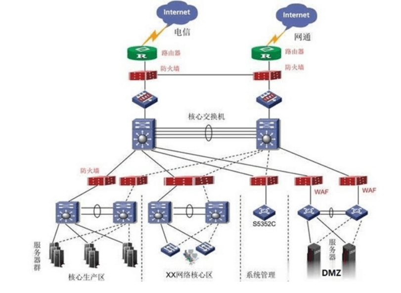
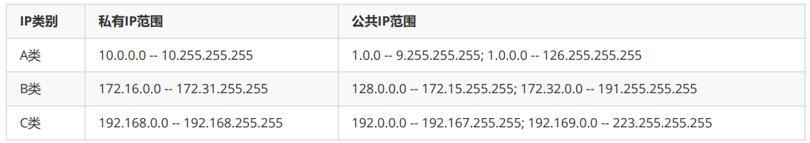
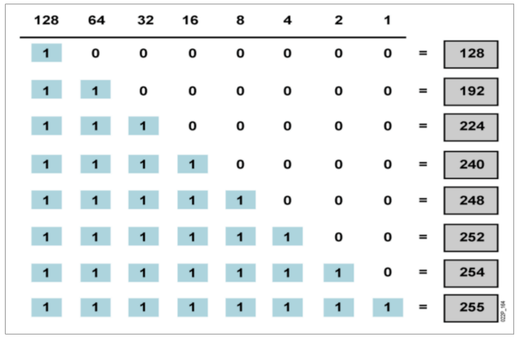

网络协议和通信
网络基础
网络概念
计算机网络是一组计算机或网络设备通过有形的线缆或无形的媒介如无线，连接起来，按照一定的规则，进行通信的集合。
网络功能和优点
- 数据和应用程序
- 资源
- 网络存储
- 备份设备
作用范围分类
| 名称 | 简写 | 注释 |
|---|---|---|
| 广域网 | WAN | Wide Area Network |
| 城域网 | MAN | Metropolitan Area Network |
| 局域网 | LAN | Local Area Network |
常见的网络物理组件
各种网络应用
| 应用类型 | 典型软件 |
|---|---|
| Web 浏览器 | Chrome、IE、Firefox等 |
| 即时消息IM | QQ、微信、钉钉等 |
| 短视频 | 抖音、快手等 |
| 电子邮件 | Outlook、foxmail等 |
| 协作 | 视频会议、VMC、Netmeeting、WebEx等 |
| web网络服务 | apache、nginx、IIS |
| 文件网络服务 | ftp、nfs、samba |
| 数据库服务 | MySQL、MariaDB、MongoDB |
| 中间件服务 | Tomcat、JBoss |
| 安全服务 | Netfilter |
| ··············· | ·················· |
应用程序对网络的要求
不同类型的应用程序对网络的要求有区别
| 程序类型 | 场景 | 特点 | 对网络要求 |
|---|---|---|---|
| 批处理程序 | 迅雷下载 | 无需直接人工交互 | 带宽很重要，但并非关键性因素 |
| 交互式程序 | 电商网站 | 人机交互 | 等待页面结果，相应时间影响用户体验 |
| 实时程序 | 视频聊天，直播 | 人与人的交互 | 端到端的延时至关重要 |
网络的特征
速度、成本、安全性、可靠性、可用性、可扩展性、拓扑
速度(带宽)
在计算机网络或者是网络运营商中，一般宽带速率的单位用bps(或b/s)表示；
bps是bits per second的缩写，表示比特/秒；即表示每秒钟传输多少位信息；
所以运营商所说的1M带宽的意思是 1Mbps（兆比特每秒，不是兆字节每秒）
网络拓扑
拓扑结构一般是指由点和线排列成的几何图形
计算机网络的拓扑结构是指一个网络的通信链路和计算机结点相互连接构成的几何图形
拓扑分类
物理拓扑
物理拓扑描述了物理设备的布线方式。
网络的物理拓扑指的是设备和电缆的物理布局。必须选择与需要安装的电缆类型匹配的恰当的物理拓扑。
逻辑拓扑
逻辑拓扑描述了信息在网络中流动的方式。
网络的逻辑拓扑表示信号从网络一个点传输到另一个点的逻辑路径。也就是说，数据访问网络介质，并通过网络介质传输数据包的方式。
拓扑结构分类
各拓扑结构的特点
总线拓扑
总线拓扑通常也称为线性总线，总线拓扑中的所有设备均由一条电缆进行连接。
在总线拓扑中，一条线缆从一台设备延伸到另一设备，类似于城市中的公交线路。主线缆段的末端必须采用终结端，当信号到达线路或线缆末端时，终结端将吸收信号。如果不具备终结端，表示数据的电子信号将在线缆末端弹回，导致网络出错。
环形拓扑
在这种拓扑结构中，网络上的所有设备都以环的形式连接。环形拓扑不需要终止的开始端或结束端。数据的传输方式不同于总线拓扑。其中一种实施形式为：“令牌”沿环移动，并在每台设备处停止。如果一台设备希望传输数据，则会在令牌中添加数据和目标地址。随后，令牌继续沿环移动，直至最终找到目标设备，目标设备将从令牌中获取数据。这类方法的优势在于，数据包不会发生冲突。环形拓扑分为两种：单环和双环
单环拓扑
在单环拓扑中，网络上的所有设备共用一条线缆，数据单向传输。各设备等候轮到自己时再通过网络发送数据。但是，单环拓扑可能存在单一故障点的问题，一个故障就可能导致整个环形拓扑停止工作。
双环拓扑
在双环拓扑中，两个环形允许双向传输数据。这种设置能提供冗余（容错能力）。也就是说，如果一个环发生故障，数据仍可在另一个环上传输。
星形和扩展星形拓扑
星形拓扑是以太网LAN中最常见的物理拓扑。在星形网络扩展为包含连接主要网络设备的附加网络设备时，即称其为扩展星形拓扑。
星形拓扑
星形拓扑将表现为车轮轮辐的形式。它包含一个中央连接点，该点是集线器、交换机或路由器等设备，所有电缆段均汇集于这一点。网络上的所有设备均使用自己的电缆连接到中央设备。
扩展星形拓扑
扩展星形拓扑的一种常见部署方式就是分层设计，例如WAN、企业LAN或园区LAN。
纯粹的扩展星形拓扑的问题在于，如果中央节点发生故障，大部分网络就会被隔离。因此，大多数扩展星形拓扑都采用一组独立连接设备之外的冗余连接，以避免在设备发生故障时造成隔离。
网状和部分网状拓扑
网状拓扑提供了星形拓扑中设备间的冗余。网络可以是完全网状的，也可以是部分网状的，具体取决于所需冗余级别。这种类型的拓扑有助于提高网络的可用性和可靠性。但是，这会提高成本，也会制约可扩展性。
全网状拓扑
全网状拓扑将所有设备（节点）彼此相连，以实现冗余和容错能力。其实施成本高、难度大。但这种拓扑的容错能力最强，因为任何一条链路的故障都不会影响网络的连通性。
连通线路计算公式：n(n-1)/2。
部份网状拓扑
在这种拓扑中，只有重要节点的设备与其它设备具有直接一一相连的线路，对于其它设备的数据传输，需要从其它节点中继，这种设计有一定的冗余和容错能力，也降低了全网状拓扑结构的成本和实施难度。
网络标准
网络标准和分层
旧模型：专有产品，由一个厂商控制应用程序和嵌入的软件
基于标准的模型：多厂商软件，分层方法
层次划分的必要性
计算机网络是由许多硬件、软件和协议交织起来的复杂系统。由于网络设计十分复杂，如何设计、组织和实现计算机网络是一个挑战，必须要采用科学有效的方法。
层次划分的方法
- 网络的层应当具有相对独立的功能
- 梳理功能之间的关系，使一个功能可以为实现另一个功能提供必要的服务，从而形成系统的层次结构
- 为提高系统的工作效率，相同或相近的功能仅在一个层次中实现，而且尽可能在较高的层次中实现
- 每一层只为相邻的上一层提供服务
层次划分的优点
- 各层之间相互独立，每一层只实现一种相对独立的功能，使问题复杂程度降低
- 灵活性好，各层内部的操作不会影响其他层
- 结构上可分割开，各层之间都可以采用最合适的技术来实现
- 易于实现和维护，因为整个系统已被分解成相对独立的子系统
- 能促进标准化工作，因为每一层的功能及其提供的服务都有了精确的说明
开放系统互联 OSI
OSI 七层的记忆口诀
1 | All People Seem To Need Data Process（物数网传会表应） |
| 序号 | 名称 | 英文 |
|---|---|---|
| 7 | 应用层 | Application |
| 6 | 表示层 | Presentation |
| 5 | 会话层 | Session |
| 4 | 传输层 | Transport |
| 3 | 网络层 | Network |
| 2 | 数据链路层 | Data Link |
| 1 | 物理层 | Physical |
在制定计算机网络标准方面，起着重大作用的两大国际组织是：国际电信联盟电信标准化部门，与国际标准化组织（ISO International Organization for Standardization），虽然它们工作领域不同，但随着科学技术的发展，通信与信息处理之间的界限开始变得比较模糊，这也成了国际电信联盟电信标准化部门和ISO共同关心的领域。1984年，ISO发布了著名的OSI(Open System Interconnection)标准，它定义了网络互联的7层框架，物理层、数据链路层、网络层、传输层、会话层、表示层和应用层），即OSI开放系统互连参考模型
OSI 模型的七层结构
第7层 应用层
应用层（Application Layer）提供为应用软件而设的接口，以设置与另一应用软件之间的通信。例如: HTTP、HTTPS、FTP、TELNET、SSH、SMTP、POP3、MySQL等
第6层 表示层
表示层（Presentation Layer）把数据转换为能与接收者的系统格式兼容并适合传输的格式
第5层 会话层
会话层（Session Layer）负责在数据传输中设置和维护电脑网络中两台电脑之间的通信连接。
第4层 传输层
传输层（Transport Layer）把传输表头（TH）加至数据以形成数据包。传输表头包含了所使用的协议等发送信息。例如:传输控制协议 （TCP）等。
第3层 网络层
网络层（Network Layer）决定数据的路径选择和转寄，将网络表头（NH）加至数据包，以形成报文。网络表头包含了网络数据。例如:互联网协议（IP）等。
第2层 数据链接层
数据链路层（Data Link Layer）负责网络寻址、错误侦测和改错。当表头和表尾被加至数据包时，会形成信息框（Data Frame）。数据链表头（DLH）是包含了物理地址和错误侦测及改错的方法。数据链表尾（DLT）是一串指示数据包末端的字符串。例如以太网、无线局域网（Wi-Fi）和通用分组无线服务（GPRS）等。分为两个子层：逻辑链路控制（logical link control，LLC）子层和介质访问控（Media access control，MAC）子层。
第1层 物理层
物理层（Physical Layer）在局部局域网上传送数据帧（Data Frame），它负责管理电脑通信设备和网络媒体之间的互通。包括了针脚、电压、线缆规范、集线器、中继器、主机接口卡等。
网络的通信过程
数据封装和数据解封
协议数据单元 PDU
PDU: Protocol Data Unit,协议数据单元是指对等层次之间传递的数据单位
发送方和接收方各层之间的PDU
| 发送方 | 数据单元PDU | 接收方 |
|---|---|---|
| 应用层 | 消息 message | 应用层 |
| 表示层 | 消息 message | 表示层 |
| 会话层 | 消息 message | 会话层 |
| 传输层 | 数据段 segment | 传输层 |
| 网络层 | 数据包 packet | 网络层 |
| 数据链路层 | 数据帧 frame | 数据链路层 |
| 物理层 | 数据位 bit | 物理层 |
三种通讯模式
三种通讯方式的区别在于目标，而不在于源
| 通讯模式 | 特点 | 示例 | |
|---|---|---|---|
| unicast | 单播 | 目标设备只有一台 | @张三 |
| broadcast | 广播 | 目标设备是所有 | @所有人 |
| multicast | 多播 | 目标设备是多个 | @张三@李四@王五 |
1 | [root@rocky86 ~]# ifconfig |
冲突域和广播域
冲突域
两个网络设备同时发送数据,如果发生了冲突,则两个设备处于同一个冲突域,反之,则各自处于不同的冲突域
广播域
一个网络设备发送广播，另一个设备收到了,则两个设备处于同一个广播域,反之,则各自处于不同的广播域
三种通讯机制
| 通讯机制 | 特点 | 示例 |
|---|---|---|
| 单工通信 | 只有一个方向的通讯 | 收音机 |
| 半双工通信 | 通信双方都可以发送和接收信息，但不能同时发送，也不能同时接收 | 对讲机 |
| 全双工通信 | 通信双方可以同时发送和同时接收 | 手机 |
查看双工和速度
1 | #如果此命令不支持，则可以使用 ethtool 命令 |
局域网 Local Area Network
概述
特点
- 网络为一个单位所拥有
- 地理范围和站点数目均有限
主要功能
- 资源共享和数据通信
优点
- 能方便地共享昂贵的外部设备、主机以及软件、数据。从一个站点可以访问全网
- 便于系统的扩展和逐渐演变，各设备的位置可灵活的调整和改变
- 提高系统的可靠性、可用性和易用性
标准
IEEE（国际电子电气工程师协会）于1980年2月成立了局域网标准委员会（简称IEEE802委员会），专门从事局域网标准化工作，并制定了IEEE802标准。802标准所描述的局域网参考模型只对应OSI参考模型的数据链路层与物理层，它将数据链路层划分为逻辑链路层LLC子层和介质访问控制MAC子层；
LLC子层负责向其上层提供服务；
MAC子层的主要功能包括数据帧的封装/卸装，帧的寻址和识别，帧的接收与发送，链路的管理，帧的差错控制等。MAC子层的存在屏蔽了不同物理链路种类的差异性。
局域网标准
| 标准名称 | 备注 |
|---|---|
| IEEE 802.1标准 | 局域网体系结构、网络互连、以及网络管理和性能测试 |
| IEEE 802.2标准 | 逻辑链路控制LLC子层功能与服务 |
| IEEE 802.3标准 | 带冲突检测的载波侦听多路访问CSMA/CD总线介质访问控制子层与物理层规范 |
| IEEE 802.4标准 | 令牌总线（Token Bus）介质访问控制子层与物理层规范 |
| IEEE 802.5标准 | 令牌环（Token Ring）介质访问控制子层与物理层规范 |
| IEEE 802.6标准 | 城域网MAN介质访问控制子层与物理层规范 |
| IEEE 802.7标准 | 宽带网络技术 |
| IEEE 802.8标准 | 光纤传输技术 |
| IEEE 802.9标准 | 综合语音与数据局域网（IVD LAN）技术 |
| IEEE 802.10标准 | 可互操作的局域网安全性规范（SILS） |
| IEEE 802.11标准 | 无线局域网技术 |
| IEEE 802.12标准 | 优先度要求的访问控制方法 |
| IEEE 802.13标准 | 未使用 |
| IEEE 802.14标准 | 交互式电视网 |
| IEEE 802.15标准 | 无线个人局域网（WPAN）的MAC子层和物理层规范。代表技术为蓝牙（Bluetooth） |
| IEEE 802.16标准 | 宽带无线局域网网络 |
| IEEE 802.20标准 | 移动宽带无线接入系统(MBWA，Mobile Broadband Wireless Access) |
| IEEE 802.22标准 | 无线地域网络（Wireless Regional Area Networks，WRAN） |
无线网络标准
中国国家无线网络标准：WAPI
Wi-Fi：无线保真（Wireless Fidelity），是Wi-Fi联盟制造商的商标做为产品的品牌认证，是一个创建于IEEE 802.11标准的无线局域网技术，Wi-Fi联盟成立于1999年，当时的名称叫做Wireless Ethernet Compatibility Alliance（WECA）。在2002年10月，正式改名为Wi-Fi Alliance。
Wi-Fi 6是当前最新的WiFi技术标准，专业称呼为：802.11ax，WiFi6简单来讲就是第六代WiFi标准的意思，就和第五代移动通信标准——5G、丐帮第六代长老的意思差不多。在WiFi6之前，WiFi的名字并不是什么WiFi5、WiFi4这种简单的叫法，而是用一串非常拗口的技术型号来区分，比如WiFi5之前就叫802.11 ac，WiFi4就叫802.11 a/b/g/n，对于懂行的人来说辨别起来没问题，但对于普通用户来说就是两眼一抓瞎看谁都一样（这就好比俄罗斯大兄弟的人名：尼古拉·阿列克谢耶维奇·奥斯特洛夫斯基，一样难记）
2018年WiFi联盟自己也感觉这样叫下去不行，我们得学学别人移动通信协会3G\4G\5G那样整个简单容易记的代号，让消费者们容易区分前代与新代，刺激厂商升级更新换代。所以WiFi6的名称就诞生了！并且一改还顺便把WiFi4、WiFi5一起名字简化了，现在大家在最新的手机系统中的WiFi角标就能看到WiFi4、WiFi5、WiFi6的标识来区分你连接的是第几代WiFi技术，整的和手机信号是一样一样的!
组网设备
常见组网设备包括路由器(Router)，交换机(Switch)，集线器(Hub)，中继器(Repeater)，线缆等

网络线缆和接口
常见的网络线缆包括 双绞线，同轴线，光纤线等;
双绞线就是我们常说的网线，又分为屏蔽双绞线（Shielded Twisted Pair，STP）与非屏蔽双绞线（Unshielded Twisted Pair，UTP）
网线标准
上世纪80年代初，诞生了最早的网线标准（CAT）,这个标准一直沿用至今，主要根据带宽和传输速率来区分，从一类网线CAT1——八类网线CAT8
- 一类网线：主要用于传输语音，不同于数据传输主要用于八十年代初之前的电话线缆，已淘汰。
- 二类网线：传输带宽为1MHZ，用于语音传输，最高数据传输速率4Mbps，常见于使用4Mbps规范令牌传递协议的旧的令牌（Token Ring），已被淘汰。
- 三类网线：该电缆的传输带宽16MHz，用于语音传输及最高传输速率为10Mbps的数据传输，主要用于10BASE–T，被ANSI/TIA-568.C.2作为最低使用等级 。
- 四类网线：该类电缆的传输频率为20MHz，用于语音传输和最高传输速率16Mbps（指的是16Mbit/s令牌环）的数据传输，主要用于基于令牌的局域网和 10BASE-T/100BASE-T。最大网段长为100m，采用RJ形式的连接器，未被广泛采用。
- 五类线：可追溯到1995年，传输带宽为100MHz，可支持10Mbps和100Mbps传输速率（虽然现实中与理论值有一定差距），主要用于双绞线以太网（10BASE-T/100BASE-T），目前仍可使用，不过在新网络建设中已经很难看到。
- 超五类线：标准于2001年被提出，传输带宽为100MHz，近距离情况下传输速率已可达1000Mbps。它具有衰减小，串扰少，比五类线增加了近端串音功率和测试要求，所以它也成为了当前应用最为广泛的网线。
- 六类线：继CAT5e之后，CAT6标准被提出，传输带宽为250MHz，最适用于传输速率为1Gbps的应用。改善了在串扰以及回波损耗方面的性能，这一点对于新一代全双工的高速网络应用而言是极重要的，还有一个特点是在4个双绞线中间加了十字形的骨架。
- 超六类线：超六类线是六类线的改进版，发布于2008年，同样是ANSI/TIA-568C.2和ISO/IEC 11801超六类/EA级标准中规定的一种双绞线电缆，主要应用于万兆位网络中。传输频率500 MHz，最大传输速度也可达到10Gbps ，在外部串扰等方面有较大改善。
- 七类线：该线是ISO/IEC 11801 7类/F级标准中于2002年认可的一种双绞线，它主要为了适应万兆以太网技术的应用和发展。但它不再是一种非屏蔽双绞线了，而是一种屏蔽双绞线，所以它的传输频率至少可达600 MHz，传输速率可达10 Gbps。
- 超七类线:相对于CAT7最大区别在于，支持的频率带宽提升到了1000MHz，在国内而言，七类网线已经有很少地方使用了，超七类就更加没有广泛的进入人们的生活，目前使用范围最广的是超五类、六类等网线。
- 八类线CAT8：相关标准由美国通信工业协会 （TIA）TR-43委员会在2016年正式发布，支持2000MHz带宽，支持40Gbps以太网络，主要应用于数据中心。
网线线序和规范
UTP线拆解
剥开双绞线，会看到其中有八条小线，两条缠绕为一股（这也是双绞线名称的由来）
分别是 绿-绿白，蓝-蓝白，橙-橙白，棕-棕白。
线序指的是压水晶头时里面小线的排列顺序
T568B标准是主流的线序
国际线序标准
| 标准 | 线序（从左到右） |
|---|---|
| T568A | 白绿 绿 白橙 蓝 白蓝 橙 白棕 棕 |
| T568B | 白橙 橙 白绿 蓝 白蓝 绿 白棕 棕 |
| USOC(8) | 白棕 绿 白橙 蓝 白蓝 橙 白绿 棕 |
| USOC(6) | 空 白绿 白橙 蓝 白蓝 橙 绿 空 |
RJ-45 Connector
双绞线针脚定义
注：BI (Bidirectional) 双向数据; RX (Receive Data) 接收数据；TX (Transmit Data) 传送数据
光纤和接口Fiber-Optic
- Short wavelength (1000BASE-SX) 最远几百米
- Long wavelength/long haul (1000BASE-LX/LH) 最远几公里
- Extended distance (1000BASE-ZX) 最远上百公里
网络适配器
网卡作用
- 进行串行/并行转换数据缓存
- 在计算机操作系统中安装设备驱动程序
- 实现以太网协议
网卡类型
- 按总线接口类型进行分类：分为ISA、PCI、PCI-X 、PCMCIA、PCI-E 和USB等几种类型
- 按传输介质接口分类：细同轴电缆的BNC接口网卡、粗同轴电缆AUI接口网卡、以太网双绞线RJ-45接口网卡、光纤F/O接口网卡、无线网卡等
- 按传输速率（带宽）分类：10Mbps网卡、100Mbps以太网卡、10Mbps/100Mbps自适应网卡、1000Mbps千兆以太网卡、40Gbps自适应网卡等
中继器和集线器
中继器 repeater
实际上是一种信号再生放大器，可将变弱的信号和有失真的信号进行整形与放大，输出信号比原信号的强度将大大提高,中继器不解释、不改变收到的数字信息，而只是将其整形放大后再转发出去
优点
- 易于操作
- 很短的等待时间
- 价格便宜
- 突破线缆的距离限制来扩展局域网段的距离
- 可用来连接不同的物理介质
缺点
- 采用中继器连接网络分支的数目要受具体的网络体系结构限制
- 中继器不能连接不同类型的网络
- 中继器没有隔离和过滤功能，无路由选择、交换、纠错／检错功能，一个分支出现故障可能会影响到其他的每一个网络分支
- 使用中继器扩充网络距离是最简单最廉价的方法，但当负载增加时，网络性能急剧下降，所以只有当网络负载很轻和网络时延要求不高的条件下才能使用
集线器 hub
集线器（Hub）工作在物理层，是中继器的一种形式，是一种集中连接缆线的网络组件，可以认为集线器是一个多端口的中继器，集线器提供多端口连接，主要功能是对接收到的信号进行再生整形放大，以扩大网络的传输距离，同时把所有节点集中在以它为中心的节点上。
Hub并不记忆报文是由哪个MAC地址发出，哪个MAC地址在Hub的哪个端口
Hub的特点：
- 共享带宽
- 半双工
网桥和交换机
网桥 Bridge
网桥（Bridge）也叫桥接器，是连接两个局域网的一种存储/转发设备，根据MAC地址表对数据帧进行转发，可隔离碰撞域
网桥将网络的多个网段在数据链路层连接起来，并对网络数据帧进行管理
网桥的内部结构
优点
- 过滤通信量
- 扩大了物理范围
- 提高了可靠性
- 可互连不同物理层、不同 MAC 子层和不同速率（如10 Mb/s 和 100 Mb/s 以太网）的局域网
缺点
- 存储转发增加了时延
- 在MAC 子层并没有流量控制功能
- 具有不同 MAC 子层的网段桥接在一起时时延更大
- 网桥只适合于用户数不太多(不超过几百个)和通信量不太大的局域网，否则有时还会因传播过多的广播信息而产生网络拥塞。这就是所谓的广播风暴
交换机 switch
交换机是工作在OSI参考模型数据链路层的设备，外表和集线器相似
它通过判断数据帧的目的MAC地址，从而将数据帧从合适端口发送出去
交换机是通过MAC地址的学习和维护更新机制来实现数据帧的转发
内部结构
工作原理
- 交换机根据收到数据帧中的源MAC地址建立该地址同交换机端口的映射，并将其写入MAC地址表中
- 交换机将数据帧中的目的MAC地址同已建立的MAC地址表进行比较，以决定由哪个端口进行转发
- 如数据帧中的目的MAC地址不在MAC地址表中，则向所有端口转发。这一过程称为泛洪（flood）
- 广播帧和组播帧向所有的端口转发
集线器与交换机的比较
- 交换机属于数据链路层设备，而集线器属于物理层设备
- 集线器在转发帧时，不对传输介质进行检测，交换机在转发帧之前必须执行 CSMA/CD 算法。若在发送过程中出现碰撞，就必须停止发送和进行退避。所以交换机能隔离冲突，而集线器却只能增加冲突
- 交换机的每个端口可提供专用的带宽，而集线器的所有端口只能共享带宽
- 集线器只能实现半双工传送，而交换机可支持全双工传送
- 集线器和交换机都无法隔离广播域
路由器 router
路由：把一个数据包从一个设备发送到不同网络里的另一个设备上去。这些工作依靠路由器来完成。路由器只关心网络的状态和决定网络中的最佳路径。路由的实现依靠路由器中的路由表来完成
路由器功能：
- 工作在网络层
- 分隔广播域和冲突域
- 选择路由表中到达目标最好的路径
- 维护和检查路由信息
- 连接广域网
对比与总结
| 设备 | iso | 域 |
|---|---|---|
| 集线器 hub | 物理层 | 同一冲突域，同一广播域 |
| 交换机 switch | 数据链路层 | 每个端口一个冲突域，所有端口都在一个广播域 |
| 路由器 router | 网络层 | 每个端口都有独立广播域 |
以太网技术
概述
| year | Ethernet activity |
|---|---|
| 1970 | First packet radio network |
| 1973 | Ethernet invented at Xerox |
| 1977 | U.S patent no. 4063220 issued |
| 1982 | DIX releases 10Mb/s Ethernet |
| 1992 | First stackable Ethernet hub |
| 2002 | IEEE approves 802.3ea; 10 billion bps |
以太网（Ethernet）是一种产生较早且使用相当广泛的局域网，由美国Xerox（施乐）公司的Palo Alto 研究中心（简称为PARC）于20世纪70年代初期开始研究并于1975年研制成功
以太网MAC帧格式
MAC地址
在局域网中，硬件地址又称为物理地址或MAC地址（因为这种地址用在MAC帧中）
IEEE 802标准为局域网规定了一种48位的全球地址（一般都简称为“地址”)，是局域网中每一台计算机固化在网卡ROM中的地址
IEEE 的注册管理机构 RA 负责向厂家分配地址字段的前三个字节(即高位 24 位)
地址字段中的后三个字节(即低位 24 位)由厂家自行指派，称为扩展标识符，必须保证生产出的适配器没有重复地址
各大厂商MAC识别码： https://standards-oui.ieee.org/oui/oui.txt
冲突检测的载波侦听多路访问 CSMA/CD
主要用在早期的Hub环境中，用来解决冲突域的问题，现在主流的交换机上不再使用
工作原理
- 先听后发
- 边发边听
- 冲突停止
- 延迟重发
虚拟局域网 VLAN
VLAN 原理
此技术可以用交换机来进行网络隔离，但要求交换机具有网络管理功能
虚拟局域网 VLAN 是由一些局域网网段构成的与物理位置无关的逻辑组这些网段具有某些共同的需求。每一个 VLAN 的帧都有一个明确的标识符，指明发送这个帧的工作站是属于哪一个 VLAN。虚拟局域网其实只是局域网给用户提供的一种服务，而并不是一种新型局域网
优点
- 更有效地共享网络资源。如果用交换机构成较大的局域网，大量的广播报文就会使网络性能下降。VLAN能将广播报文限制在本VLAN范围内，从而提升了网络的效能
- 简化网络管理。当结点物理位置发生变化时，如跨越多个局域网，通过逻辑上配置VLAN即可形成网络设备的逻辑组，无需重新布线和改变IP地址等。这些逻辑组可以跨越一个或多个二层交换机
- 提高网络的数据安全性。一个VLAN中的结点接收不到另一个VLAN中其他结点的帧
虚拟局域网的实现技术
- 基于端口的VLAN
- 基于MAC地址的VLAN
- 基于协议的VLAN
- 基于网络地址的VLAN
IEEE 802.1Q 帧结构
VLAN 标签各字段含义
TPID：Tag Protocol Identifier（标签协议标识符），2Byte，表示帧类型，取值为0x8100时表示IEEE 802.1Q的VLAN数据帧。如果不支持 802.1Q的设备收到这样的帧，会将其丢弃，各设备厂商可以自定义该字段的值。当邻居设备将TPID值配置为非0x8100时， 为了能够识别这样的报文，实现互通，必须在本设备上修改TPID值，确保和邻居设备的TPID值配置一致
PRI：Priority，3bit，表示数据帧的802.1p（是IEEE 802.1Q的扩展协议）优先级。取值范围为0～7，值越大优先级越高。当网络阻塞时，交换机优先发送优先级高的数据帧
CFI：Canonical Format Indicator（标准格式指示位），1bit,表示MAC地址在不同的传输介质中是否以标准格式进行封装，用于兼容以太网和令牌环网。CFI取值为0表示MAC地址以标准格式进行封装，为1表示以非标准格式封装。在以太网中，CFI的值为0
VID：VLAN ID，12bit，表示该数据帧所属VLAN的编号。VLAN ID取值范围是0～4095。由于0和4095为协议保留取值，所以VLAN ID的有效取值范围是1～4094
分层的网络架构
架构一
架构二

架构三
TCP/IP 协议栈
TCP/IP 标准
TCP/IP 介绍
Transmission Control Protocol/Internet Protocol 传输控制协议/因特网互联协议
TCP/IP是一个Protocol Stack，包括TCP、IP、UDP、ICMP、RIP、TELNET、FTP、SMTP、ARP等许多协议
最早发源于1969年美国国防部（缩写为DoD）的因特网的前身ARPA网络项目，1983年1月1日，TCP/IP取代了旧的网络控制协议NCP，成为今天的互联网和局域网的基石和标准,由互联网工程任务组负责维护
国防高级研究计划局DARPA与BBN技术公司、斯坦福大学和伦敦大学学院签约，在多个硬件平台上开发协议的操作版本。 在协议开发过程中，数据包路由层的版本号从版本 1 进展到版本 4，后者于 1983 年安装在 ARPA NET 中。它被称为互联网协议版本4（IPv4）作为协议，仍在互联网使用，连同其目前的继承，互联网协议版本6（IPv6）。
RFC 文档： https://www.ietf.org/rfc/rfc1180.html
RFC ( Request For Comments )
RFC文档也称请求审议文档（Requests for Comments，RFC），是一系列不断修改和完善的报告、协议提案和协议标准，是用于发布 Internet 标准的一种网络文件或工作报告。
RFC 是由互联网工程任务组（IETF）维护，由互联网协会(ISOC)赞助发行
TCP/IP 分层
共定义了四层，和OSI参考模型的分层有对应关系
RFC文档: https://www.ietf.org/rfc/rfc1122#section-1.3.3
RFC官方分为四层:
- Application Layer
- Transport Layer
- Internet Layer、
- Link Layer(media-access)
TCP/IP 应用层
TCP/IP 通信过程
TCP/IP和OSI模型的比较
相同点
- 两者都是以协议栈的概念为基础
- 协议栈中的协议彼此相互独立
- 下层对上层提供服务
不同点
- OSI是先有模型；TCP/IP是先有协议，后有模型
- OSI是国际标准，适用于各种协议栈；TCP/IP实际标准，只适用于TCP/IP网络
- 层次数量不同
transport 层

TCP和UDP对比
| 字段 | tcp | udp |
|---|---|---|
| 是否连接 | 面向连接 | 无连接 |
| 是否是可靠传输 | 可靠传输 | 不可靠传输 |
| 连接目标个数 | 一对一 | 支持一对一，一对多，多对一，多对多传输 |
| 是否有序 | 有序传输 | 无序传输 |
| 首部大小 | 首部最少20字节，最大60字节 | 首部8字节 |
| 传输方式 | 面向字节流 | 面向报文 |
| 常见应用 | 邮件服务，文件下载，网站浏览等 | 语音聊天，视频聊天等 |
TCP
TCP：传输控制制协议 ( Transmission Control Protocol )
TCP特性
- 工作在传输层
- 面向连接协议
- 全双工协议
- 半关闭
- 将数据打包成段，排序
- 确认机制
- 数据恢复，重传
- 错误检查
- 流量控制，滑动窗口
- 拥塞控制，慢启动和拥塞避免算法
1 | 更多关于tcp的内核参数，可参看 man 7 tcp |
TCP包头结构
- 源端口、目标端口：计算机上的进程要和其他进程通信是要通过计算机端口的，而一个计算机端口某个时刻只能被一个进程占用，所以通过指定源端口和目标端口，就可以知道是哪两个进程需要通信。源端口、目标端口是用16位表示的，可推算计算机的端口个数为 2^16个,即65536
- 序列号：表示本报文段所发送数据的第一个字节的编号。在TCP连接中所传送的字节流的每一个字节都会按顺序编号。由于序列号由32位表示，所以每2^32个字节，就会出现序列号回绕，再次从 0 开始
- 确认号：表示接收方期望收到发送方下一个报文段的第一个字节数据的编号。也就是告诉发送方：我希望你（指发送方）下次发送的数据的第一个字节数据的编号为此确认号
- 数据偏移：表示TCP报文段的首部长度，共4位，由于TCP首部包含一个长度可变的选项部分，需要指定这个TCP报文段到底有多长。它指出 TCP 报文段的数据起始处距离 TCP 报文段的起始处有多远。该字段的单位是32位(即4个字节为计算单位），4位二进制最大表示15，所以数据偏移也就是TCP首部最大60字节
- URG：表示本报文段中发送的数据是否包含紧急数据。后面的紧急指针字段（urgent pointer）只有当URG=1时才有效
- ACK：表示是否前面确认号字段是否有效。只有当ACK=1时，前面的确认号字段才有效。TCP规定，连接建立后，ACK必须为1,带ACK 标志的TCP报文段称为确认报文段
- PSH：提示接收端应用程序应该立即从TCP接收缓冲区中读走数据，为接收后续数据腾出空间。如果为1，则表示对方应当立即把数据提交给上层应用，而不是缓存起来，如果应用程序不将接收到的数据读走，就会一直停留在TCP接收缓冲区中
- RST：如果收到一个RST=1的报文，说明与主机的连接出现了严重错误（如主机崩溃），必须释放连接，然后再重新建立连接。或者说明上次发送给主机的数据有问题，主机拒绝响应，带RST标志的TCP报文段称为复位报文段
- SYN：在建立连接时使用，用来同步序号。当SYN=1，ACK=0时，表示这是一个请求建立连接的报文段；当SYN=1，ACK=1时，表示对方同意建立连接。SYN=1，说明这是一个请求建立连接或同意建立连接的报文。只有在前两次握手中SYN才置为1，带SYN标志的TCP报文段称为同步报文段
- FIN：表示通知对方本端要关闭连接了，标记数据是否发送完毕。如果FIN=1，即告诉对方：“我的数据已经发送完毕，你可以释放连接了”，带FIN标志的TCP报文段称为结束报文段
- 窗口大小：表示现在允许对方发送的数据量，也就是告诉对方，从本报文段的确认号开始允许对方发送的数据量，达到此值，需要ACK 确认后才能再继续传送后面数据，由Window size value * Window size scaling factor（此值在三次握手阶段TCP选项Window scale协商得到）得出此值
- 校验和：提供额外的可靠性
- 紧急指针：标记紧急数据在数据字段中的位置
- 选项部分：其最大长度可根据TCP首部长度进行推算。TCP首部长度用4位表示，选项部分最长为：(2^4-1)*4-20=40字节
TCP包头常见选项
最大报文字段长度MSS（Maximum Segment Size）
通常1460字节
指明自己期望对方发送TCP报文段时那个数据字段的长度。比如：1460字节。数据字段的长度加上TCP首部的长度才等于整个TC报文段的长度。MSS不宜设的太大也不宜设的太小。若选择太小，极端情况下，TCP报文段只含有1字节数据，在IP层传输的数据报的 开销至少有40字节（包括TCP报文段的首部和IP数据报的首部）这样，网络的利用率就不会超过1/41。若TCP报文段非常长，那么 在IP层传输时就有可能要分解成多个短数据报片。在终点要把收到的各个短数据报片装配成原来的TCP报文段。当传输出错时还要进行重传， 这些也都会使开销增大。因此MSS应尽可能大，只要在IP层传输时不需要再分片就行。在连接建立过程中，双方都把自 己能够支持的MSS写入这一字段，MSS只出现在SYN报文中。即：MSS出现在SYN=1的报文段中MTU和MSS值的关系
MTU=MSS+IP Header+TCP Header，通信双方最终的MSS值=较小MTU-IP Header-TCP Header
窗口扩大 Window Scale
为了扩大窗口，由于TCP首部的窗口大小字段长度是16位，所以其表示的最大数是65535。但是随着时延和带宽比较大的通信产生（如卫星通信），需要更大的窗口来满足性能和吞吐率，所以产生了这个窗口扩大选项。
时间戳 Timestamps
可以用来计算RTT(往返时间)，发送方发送TCP报文时，把当前的时间值放入时间戳字段，接收方收到后发送确认报文时，把这个时间戳字段的值复制到确认报文中，当发送方收到确认报文后即可计算出RTT。也可以用来防止回绕序号PAWS，也可以说可以用来 区分相同序列号的不同报文。因为序列号用32为表示，每2^32个序列号就会产生回绕，那么使用时间戳字段就很容易区分相同序列号的不 同报文
TCP协议PORT
传输层通过port号，确定应用层协议，范围0-65535
维基百科：https://en.wikipedia.org/wiki/List_of_TCP_and_UDP_port_numbers
IANA互联网数字分配机构负责域名，数字资源，协议分配
0-1023：
系统端口或特权端口(仅管理员可用) ，众所周知，永久的分配给固定的系统应用使用，
22/tcp(ssh), 80/tcp(http), 443/tcp(https)
1024-49151：
用户端口或注册端口，但要求并不严格，分配给程序注册为某应用使用，
1433/tcp(SqlServer),1521/tcp(oracle),3306/tcp(mysql),11211/tcp/udp (memcached)
49152-65535：
动态或私有端口，客户端随机使用端口，范围定义：/proc/sys/net/ipv4/ip_local_port_range
1 | #常用服务及端口对应关系 |
模拟tcp连接过程
1 | yum install -y nc |
验证只有root 才能开启超级端口
1 | [root@localhost ~]# su jose |
TCP端口号通信过程
TCP序号和确认号
TCP确认和固定窗口
TCP滑动窗口
三次握手和四次挥手
建立连接
TCP三次握手
seq 序号; ack 确认号
抓包规则
1 | #157客户端，158服务端，通过ssh去连接 |
获取客户端 SYN-SENT 瞬间状态
1 | #158 作服务端，丢弃157的数据包 |
清除防火墙规则
1 | [root@rocky86 ~]# iptables -F |
获取服务端 SYN-RCVD 瞬间状态
1 | #客户端开启防火墙，抛弃服务端的包，并发起连接 |
TCP四次挥手
MSL :Maximum Segment Lifetime
查看 MSL
1 | [root@localhost ~]# sysctl net.ipv4.tcp_fin_timeout |
有限状态机 FSM
FSM:Finite State Machine
1 | [root@localhost ~]# man 8 netstat |
TCP 状态转换图（也称作有限状态机）。箭头表示因报文传输、接收以及计时器超时而引发的状态转换。粗箭头表示典型的客户端行为，虚线箭头表示典型的服务器行为。粗体指令（例如open、close）是应用程序执行的操作
虚线：服务器 实线：客户端
状态标识与说明
客户端先发送一个FIN给服务端，自己进入FIN_WAIT_1状态，这时等待接收服务端报文，该报文会有三种可能
只有服务端的ACK
只收到服务器的ACK，客户端会进入FIN_WAIT_2状态，后续当收到服务端的FIN时，回应发送一个ACK，会进入到TIME_WAIT状 态，这个状态会持续2MSL(TCP报文段在网络中的最大生存时间, RFC 1122标准的建议值是2min).客户端等待2MSL，是为了当最 后一个ACK丢失时可以再发送一次。因为服务端在等待超时后会再发送一个FIN给客户端，进而客户端知道ACK已丢失
只有服务端的FIN
只有服务端的FIN时，回应一个ACK给服务端，进入CLOSING状态，然后接收到服务端的ACK时，进入TIME_WAIT状态
基于服务端的ACK，又有FIN
同时收到服务端的ACK和FIN，直接进入TIME_WAIT状态
客户端的典型状态转移
客户端通过connect系统调用主动与服务器建立连接connect系统调用首先给服务器发送一个同步报文段，使连接转移到SYN_SENT状态
此后connect系统调用可能因为如下两个原因失败返回：
1、如果connect连接的目标端口不存在（未被任何进程监听），或者该端口仍被处于TIME_WAIT状态的连接所占用，则服务器将给客户端发送一个复位报文段，connect调用失败。
2、如果目标端口存在，但connect在超时时间内未收到服务器的确认报文段，则connect调用失败。connect调用失败将使连接立即返回到初始的CLOSED状态。如果客户端成功收到服务器的同步报文段和确认，则connect调用成功返回，连接转移至ESTABLISHED状态当客户端执行主动关闭时，它将向服务器发送一个结束报文段，同时连接进入FIN_WAIT_1状态。若此时客户端收到服务器专门用于确认目的的确认报文段，则连接转移至FIN_WAIT_2状态。当客户端处于FIN_WAIT_2状态时，服务器处于CLOSE_WAIT状态，这一对状态是可能发生半关闭的状态。此时如果服务器也关闭连接（发送结束报文段），则客户端将给予确认并进入TIME_WAIT状态客户端从FIN_WAIT_1状态可能直接进入 TIME_WAIT 状态（不经过FIN_WAIT_2状态），前提是处于FIN_WAIT_1状态的服务器直接收到带确认信息的结束报文段（而不是先收到确认报文段，再收到结束报文段）
处于FIN_WAIT_2状态的客户端需要等待服务器发送结束报文段，才能转移至TIME_WAIT状态，否则它将一直停留在这个状态。如果不是为了在半关闭状态下继续接收数据，连接长时间地停留在FIN_WAIT_2状态并无益处。连接停留在FIN_WAIT_2状态的情况可能发生在：客户端执行半关闭后，未等服务器关闭连接就强行退出了。此时客户端连接由内核来接管，可称之为孤儿连接（和孤儿进程类似）
Linux为了防止孤儿连接长时间存留在内核中，定义了两个内核参数：
1 | #指定内核能接管的孤儿连接数目 |
sync半连接和accept全连接队列
半连接：还没有完成3次握手的连接
全连接：己经完成三次握手，但没有被应用层提走的连接
1 | #未完成连接队列大小，默认值128,建议调整大小为1024以上 |
注意，监听的 Socket 和真正用来传数据的 Socket 是两个：
- 一个叫作监听 Socket；
- 一个叫作已连接 Socket
C/S 网络通信过程
TCP超时重传
异常网络状况下（开始出现超时或丢包），TCP控制数据传输以保证其承诺的可靠服务TCP服务必须能够重传超时时间内未收到确认的TCP报文段。为此，TCP模块为每个TCP报文段都维护一个重传定时器，该定时器在TCP报文段第一次被发送时启动。如果超时时间内未收到接收方的应答，TCP模块将重传TCP报文段并重置定时器。至于下次重传的超时时间如何选择，以及最多执行多少次重传，就是TCP的重传策略与TCP超时重传相关的两个内核参数：
1 | #指定在底层IP接管之前TCP最少执行的重传次数，默认值是 |
拥塞控制
网络中的带宽、交换结点中的缓存和处理机等，都是网络的资源。在某段时间，若对网络中某一资源的需求超过了该资源所能提供的可承受的能力，网络的性能就会变坏。此情况称为拥塞
TCP为提高网络利用率，降低丢包率，并保证网络资源对每条数据流的公平性。即所谓的拥塞控制TCP拥塞控制的标准文档是RFC 5681，其中详细介绍了拥塞控制的四个部分：慢启动（slow start）、拥塞避免（congestion avoidance）、快速重传（fast retransmit）和快速恢复（fast recovery）
拥塞控制算法在Linux下有多种实现，比如reno算法、vegas算法和cubic算法等。它们或者部分或者全部实现了上述四个部分
1 | #查看当前所使用的拥塞控制算法 |
内核TCP参数优化
1 | [root@localhost ~]# vim /etc/sysctl.conf |
作用说明：
- net.ipv4.tcp_fin_timeout 表示套接字由本端要求关闭，这个参数决定了它保持在FIN-WAIT-2状态的时间，默认值是60秒。 该参数对应系统路径为：/proc/sys/net/ipv4/tcp_fin_timeout 60
- net.ipv4.tcp_tw_reuse 表示开启重用。允许将TIME-WAIT sockets重新用于新的TCP连接，默认值为0，表示关闭。 该参数对应系统路径为：/proc/sys/net/ipv4/tcp_tw_reuse 0
- net.ipv4.tcp_tw_recycle 表示开启TCP连接中TIME-WAIT sockets的快速回收。 该参数对应系统路径为：/proc/sys/net/ipv4/tcp_tw_recycle，默认为0，表示关闭。 提示：reuse和recycle这两个参数是为防止生产环境下服务器time_wait网络状态数量过多设置的。
- net.ipv4.tcp_syncookies 表示开启SYN Cookies功能。当出现SYN等待队列溢出时，启用Cookies来处理，可防范少量SYN攻击，这个参数也可以不添加。 该参数对应系统路径为：/proc/sys/net/ipv4/tcp_syncookies,默认值为1
- net.ipv4.tcp_keepalive_time 表示当keepalive启用时，TCP发送keepalive消息的频度。默认是2小时，建议改为10分钟。 该参数对应系统路径为：/proc/sys/net/ipv4/tcp_keepalive_time,默认为7200秒。
- net.ipv4.ip_local_port_range 该选项用来设定允许系统打开的端口范围，即用于向外连接的端口范围。 该参数对应系统路径为：/proc/sys/net/ipv4/ip_local_port_range 32768 61000
- net.ipv4.tcp_max_syn_backlog 表示SYN队列的长度，即半连接队列长度，默认为1024，建议加大队列的长度为8192或更多，这样可以容纳更多等待连接的网络连接数。 该参数为服务器端用于记录那些尚未收到客户端确认信息的连接请求最大值。 该参数对象系统路径为：/proc/sys/net/ipv4/tcp_max_syn_backlog
- net.ipv4.tcp_max_tw_buckets 表示系统同时保持TIME_WAIT套接字的最大数量，如果超过这个数值，TIME_WAIT套接字将立刻被清除并打印警告信息。 默认为180000，对于Apache、Nginx等服务器来说可以将其调低一点，如改为5000~30000，不通业务的服务器也可以给大一点，比如LVS、Squid。 此项参数可以控制TIME_WAIT套接字的最大数量，避免Squid服务器被大量的TIME_WAIT套接字拖死。 该参数对应系统路径为：/proc/sys/net/ipv4/tcp_max_tw_buckets
- net.ipv4.tcp_synack_retries 参数的值决定了内核放弃连接之前发送SYN+ACK包的数量。 该参数对应系统路径为：/proc/sys/net/ipv4/tcp_synack_retries,默认值为5
- net.ipv4.tcp_syn_retries 表示在内核放弃建立连接之前发送SYN包的数量。 该参数对应系统路为：/proc/sys/net/ipv4/tcp_syn_retries,默认值为6
- net.ipv4.tcp_max_orphans 用于设定系统中最多有多少个TCP套接字不被关联到任何一个用户文件句柄上。 如果超过这个数值，孤立连接将被立即被复位并打印出警告信息。 这个限制只有为了防止简单的DoS攻击。不能过分依靠这个限制甚至认为减少这个值，更多的情况是增加这个值。 该参数对应系统路径为：/proc/sys/net/ipv4/tcp_max_orphans ，默认值8192
- net.core.somaxconn 同时发起的TCP的最大连接数，即全连接队列长度，在高并发请求中，可能会导致链接超时或重传，一般结合并发请求数来调大此值。 该参数对应系统路径为：/proc/sys/net/core/somaxconn ，默认值是128
- net.core.netdev_max_backlog 表示当每个网络接口接收数据包的速率比内核处理这些包的速率快时，允许发送到队列的数据包最大数。 该参数对应系统路径为：/proc/sys/net/core/netdev_max_backlog，默认值为1000
UDP
UPD：用户数据报协议 ( User Datagram Protocol )
UDP特性
- 工作在传输层
- 提供不可靠的网络访问
- 非面向连接协议
- 有限的错误检查
- 传输性能高
- 无数据恢复特性
更多关于udp的内核参数，可参看man 7 udp
UDP包头
Internet层
Internet Control Message Protocol
利用icmp协议判断网络状态
1 | [root@rocky86 ~]# ping 223.5.5.5 |
发大数据包
多台设备同时去ping一台设备，理论上来讲，可以将该设备网卡打满，这也是ddos攻击的一种
1 | [root@rocky86 ~]# ping -f -s 65508 10.0.0.100 |
Address Resolution Protocol
ARP
ARP地址解析协议由互联网工程任务组(IETF)在1982年11月发布的RFC 826中描述制定，是根据IP地址获取物理地址的一个TCP/IP协议。
主机发送信息时将包含目标IP地址的ARP请求广播到局域网络上的所有主机，并接收返回消息，以此确定目标的物理地址；收到返回消息后将该IP地址和物理地址存入本机ARP缓存中并保留一定时间，下次请求时直接查询ARP缓存以节约资源。地址解析协议是建立在网络中各个主机互相信任的基础上的，局域网络上的主机可以自主发送ARP应答消息，其他主机收到应答报文时不会检测该报文的真实性就会将其记入本机ARP缓存。
同网段的ARP
跨网段的ARP
查看ARP缓存
1 | #win |
ARP静态绑定可以防止ARP欺骗
1 | [root@localhost ~]# arp -s 10.0.0.6 00:0c:29:32:80:38 |
kali 系统实现 arp 欺骗上网流量劫持
1 | #启动路由转发功能 |
kali 是一个linux 发行版，里面集成了大量工具
Gratuitous ARP
Gratuitous ARP也称为免费ARP，无故ARP。Gratuitous ARP 不同于一般的ARP请求，它并非期待得到ip对应的mac地址，而是当主机启动的时候，将发送一个Gratuitous arp请求，即请求自己的ip地址的mac地址
1 | [root@rocky86 ~]# ip a a 10.0.0.159/24 |
免费ARP可以有两个方面的作用：
- 验证IP是否冲突：一个主机可以通过它来确定另一个主机是否设置了相同的 IP地址
- 更换物理网卡：如果发送ARP的主机正好改变了物理地址(如更换物理网卡)，可以使用此方法通知网络中其它主机及时更新ARP缓存
Reverse Address Resolution Protocol
RARP 反向ARP，即将MAC转换成IP
internet 协议
Internet 协议特征
- 运行于 OSI 网络层
- 面向无连接的协议
- 独立处理数据包
- 分层编址
- 尽力而为传输
- 无数据恢复功能
IP PDU 报头
IP PDU 报头格式 版本：
- 占4位,指 IP 协议的版本目前的IP协议版本号为4；
- 首部长度：占4位，可表示的最大数值是15个单位，一个单位为4字节，因此IP 的首部长度的最大值是60字节；
- 区分服务：占8位,用来获得更好的服务，在旧标准中叫做服务类型，但实际上一直未被使用过，后改名为区分服务，只有在使用区分服务(DiffServ)时,这个字段才起作用.一般的情况下不使用；
- 总长度：占16位，指首部和数据之和的长度,单位为字节，因此数据报的最大长度为 65535 字节，总长度必须不超过最大传送单元 MTU；
- 标识：占16位，它是一个计数器,通常，每发送一个报文，该值会加1， 也用于数据包分片，在同一个包的若干分片中，该值是相同的；
- 标志(flag)：占3位，目前只有后两位有意义， DF： Don’t Fragment 中间的一位，只有当 DF=0 时才允许分片，MF： More Fragment 最后一位，MF=1表示后面还有分片，MF=0 表示最后一个分片IP PDU 报头；
- 片偏移：占13位，指较长的分组在分片后，该分片在原分组中的相对位置。片偏移以8个字节为偏移单位；
- 生存时间：占8位,记为TTL (Time To Live) 数据报文在网络中可通过的路由器数的最大值，TTL 字段是由发送端初始设置一个 8 bit字段，推荐的初始值由分配数字 RFC 指定,当前值为 64，发送 ICMP 回显应答时经常把 TTL 设为最大值 255；
- 协议：占8位，指出此数据报携带的数据使用何种协议以便目的主机的IP层将数据部分上交给哪个处理过程，1 表示为 ICMP 协议， 2 表示为 IGMP 协议， 6表示为 TCP 协议，17表示为 UDP 协议；
- 首部检验和：占16位，只检验数据报文的首部不检验数据部分，这里不采用 CRC 检验码而采用简单的计算方法；
- 源地址和目的地址：都各占4字节，分别记录源地址和目的地址；
修改默认ttl
1 | [root@localhost ~]# cat /proc/sys/net/ipv4/ip_default_ttl |
禁用IPv6 注意:禁用IPv6可能会影响一些服务的启动,如:ssh,postfix,mysql等
1 | [root@localhost ~]# ip a |
协议域
主机到主机的包传递完整过程


IP地址
IP地址组成
它们可唯一标识 IP 网络中的每台设备 ，每台主机（计算机、网络设备、外围设备）必须具有唯一的地址
mac 属于物理地址，mac 地址不可变，一出厂就写死，标识惟一设备
ip 属于逻辑地址，逻辑地址可修改，人为赋予，可以修改，使用灵活，便于管理
ipv4 32位二进制，以十进制显示
ipv6 128位二进制，以十六进制显示
IP地址转十进制INT
1 | <------|------|------|------|------|------|------|------|------|--- |
遍历检测当前网段内的主机
1 | 10.0.0.1 = 00001010 00000000 00000000 00000001 |
IPv4地址格式：点分十进制记法
IP地址由两部分组成
- 网络 ID：标识网络，每个网段分配一个网络ID，处于高位
- 主机 ID：标识单个主机，由组织分配给各设备，处于低位
IP地址分类
各类IP特点
| A类 | B类 | C类 | d类 | |
|---|---|---|---|---|
| 高8位范围 | 00000000-01111111 | 100000000-10111111 | 11000000-11011111 | 11100000-11100000 |
| 高8位10进制 | 0-127 | 128-191 | 192-223 | 224-239 |
| 网络ID | 高8位 | 高16位 | 高24位 | |
| 主机ID | 低24位 | 低16位 | 低8位 | |
| 网络数 | 2^7-2=126 | 2^14=16384 | 2^21=2097152 | |
| 每个网络主机数 | 2^24-2=16777214 | 2^16-2=65534 | 2^8-2=254 | |
| 默认子网掩码 | 255.0.0.0 | 255.255.0.0 | 255.255.255.0 | |
| 范例 | 114.114.114 | 180.76.76.76 | 223.6.6.6 |
公共和私有IP地址
公共IP地址：互联网上设备拥有的唯一地址
私有IP地址：不直接用于互联网，通常在局域网中使用

特殊地址
保留地址
在一个IP地址中，如果主机ID全为0，或主机ID全为1，则该地址是保留地址
如在B类127.16 网段中，172.16.0.0 和 172.16.255.255 为保留地址
子网掩码
CIDR：无类域间路由，目前的网络已不再按A，B，C类划分网段，可以任意指定网段的范围
CIDR 无类域间路由表示法：IP/网络ID位数，如：172.16.0.100/16
netmask子网掩码：32位或128位（IPv6）的数字，和IP成对使用，用来确认IP地址中的网络ID和主机ID，对应网络ID的位为1，对应主机ID的位为0,范例:255.255.255.0 ，表现为连续的高位为1，连续的低位为0
范例：
1 | IP地址 172.16.0.0 |
子网掩码的八位

相关公式：
- 一个网络的最多的主机数 ＝2 ^ 主机ID位数 - 2
- 网络（段）数 = 2 ^ 网络ID中可变的位数
- 网络ID = IP 与 netmask
用不同命令查看ip和netmask
1 | [root@bogon ~]# ifconfig ens160 |
不同ip类型对应netmask
两种写法转换
1 | 10.0.0.100/23 23=8+8+7+0=255.255.254.0 |
判断对方主机是否在同一个网段：
用自已的子网掩码分别和自已的IP及对方的IP相与，比较结果，相同则同一网络，不同则不同网段
1 | #10.0.0.100/24, 10.0.1.100/24 |
1 | #10.0.0.100/24, 10.0.1.100/16 |
1 | <------|------|------|------|------|------|------|------|------|--- |
一个主机：220.100.199.0/22，求主机数量，最小IP，最大IP
1 | #网络ID |
划分子网
划分子网：将一个大的网络（主机数多）划分成多个小的网络（主机数少），主机ID位数变少，网络ID位数变多，网络ID位向主机ID位借n 位,将划分2^n个子网
可变长度子网掩码
Subnet地址
划分子网数=2^(网络ID向主机ID借的位数)
1 | #10.0.0.0/8 |
1 | #中国移动10.0.0.0/8 给32个各省公司划分对应的子网 |
1 | #河南省再给省内的18个地市划分子网，求： |
优化IP地址分配
合并超网：将多个小网络合并成一个大网，主机ID位向网络ID位借位，主要实现路由聚合功能
1 | #8个C类网段 |
跨网络通信
跨网络通信：路由,选择路径
路由分类：
- 主机路由
- 网络路由
- 默认路由
优先级：精度越高，优先级越高